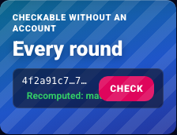
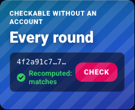
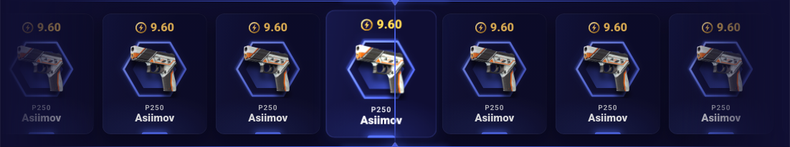
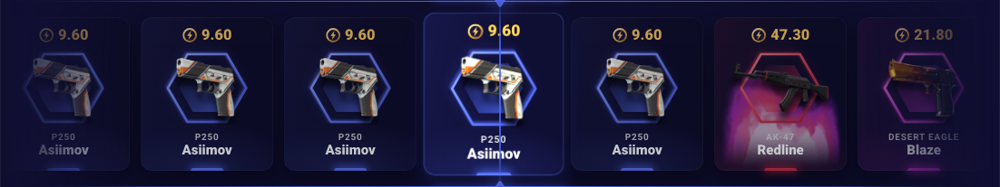
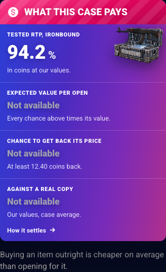
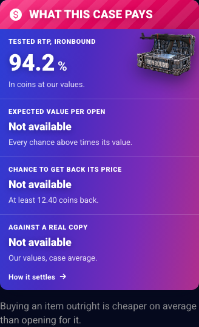
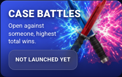
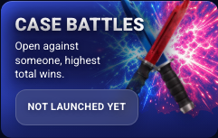

All screens in colour
The coloured copies of the grey prototype, one card per screen. Open a state and the side menu becomes this list, with the way back here at its top, as the wireframes work. Each screen is assembled from the kit, design/kit/kit.css and its scripts, and nothing else; the structure, the words and the states stay the grey screen's.
Screens in colour
Each state is an address, so it can be opened, sent and checked on its own. Where the grey prototype draws a state as its own page, the card names that page.
Coverage
Every grey screen of the prototype, from wireframes/_nav.js. A lit tile has a coloured copy and opens it. The rest are in grey and wait for the rollout at stage 12, built once from the finished system: the sample of eight carries stages 08 to 11, so the product is not yet all in colour. The counts above are computed from the same two lists.
Kit and tokens
Every screen above is assembled from one kit and nothing else. Its showcase draws each component live in its states, with the root's values and their origins and the inventory of the whole product.
Before to after
The critique of the sample (step 6) and the final check (step 7), by class. Every row has a status; a finding that did not survive verification stays, with its reason. The full log is design/kit/docs/critique.md.
| Class | Found | Fixed | Withdrawn on verification | Carried or asked |
|---|---|---|---|---|
| Wiring | 1 | 0 | 0 | 1 carried to stage 08: the hub reads the grey registry until it becomes a data file |
| The kit's rules | 11 | 1 | 1: style attributes carry data only | 9 carried: the grey-era layer, literals beside variables, a rule written 21 times, classes with no rule to stage 08; the motion literals to stage 11 |
| Inventory read by a newcomer | 11 | 9 | 0 | 2 carried to stage 08: open tokens, Select against Popover menu |
| Contrast | 10 | 5 | 5: one heading is large text; two pairs pass the pixel measurement; one link was measured inside a closed answer; a hover pair is recorded with its ratio | 0 |
| Structure and text against the grey | 39 | 0 | 39: each a founder decision or the comparison itself | 0 |
| Breaks at 360 | 4 | 0 | 2: the stage growing at the outcome is v4's frame, a founder pick; the images past the column are scrollers or art clipped by its card | 2 carried to stage 10: Pay below the fold on Deposit's routes, the catalogue tile's gap |
| Layout and typography | 2 | 2 | 0 | 0 |
| Accessibility (audit) | 9 | 4 | 0 | 5 carried: skip link and required fields to stage 08, pause control to stage 11, header figures and text spacing to stage 10 |
| Performance (audit) | 5 | 0 | 0 | 5 carried: stylesheet split and DOM size to stage 08, video and baked shadows to stage 11, image sizes to production |
| Style outside the kit | 4 | 2 | 1: the hub's own styles, a process page and not a screen | 1 carried to stage 11 with the motion literals |
| Design review | 14 | 1 | 1: the stage at 360 (as above) | 2 deliberate by decision; 10 carried to stage 08 to verify |
| No finding | 0 | 0 | 0 | microcopy against microcopy.md, wireframes/ untouched, one markup per component, navigation, images and icons |
Where the fixes went. Into the kit, every one: 18 changes at step 6 and 16 at step 7, in kit.css and the kit's scripts. No style was written on a screen; screens changed only to name a declared form in their markup, or by being rebuilt from the shell.
Breaks at 360 and contrast: the chosen provider on Deposit
No page broke at 360 in either pass: no sideways scroll, no text cut by its box, so this class has no fix of its own to show. The pair at 360 is the provider tile, whose white label sat on the brand pink at 3.5:1; it now starts from the button's deeper pink.
Layout: Home's proof line at 1280
"Recomputed: matches" ran 40px out of its box and under Check, its tick squeezed to nothing. It wraps now, and the tick shows.


The reveal: a loss on the cheapest item
The no near miss rule filled the strip with P250 around the stop. Since D-253 it binds the cards that pass while the run slows and the one after the stop; from the second card after it the case's own mix returns.


Contrast: Not available on What this case pays
The missing figure was muted grey on the pink plate, 2.3:1. It is white now, 6.2:1; its smaller size and its words still say it is not a figure.


Contrast: a mode card's words over its art
Where the knives, the crystals or the gold arrow ran under a card's words, white stood at 1.3:1 on the lightest pixel. A soft shade now sits under each name and line, over the art (D-255, the founder's choice), and the Not launched yet plate is a shade deeper: all of them pass at 1440 and 360.

